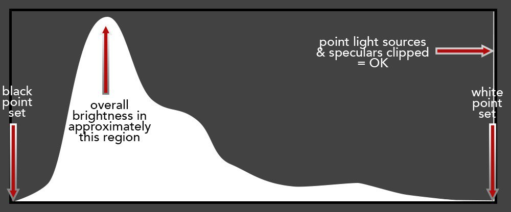

Photographer's opinion on the second validation submissions
MY EXPECTATIONS
- Artefact-free.
- Overall fairly neutral colour balance with colourful small elements. If there is any colour cast, blue is more acceptable, while greens (from cyan to yellow-green) are by tradition unacceptable.
- Full tonal range, ie black point set.
- Unlit and weakly lit areas dark, i.e. overall histogram bias to left (see diagram).
- No clipping except for point light sources and speculars.
- Overall quite colourful.
- Saturation not to reach 100%, which reads as unrealistic. This is particularly important for night scenes, featuring both light sources and illuminated small areas against an overall dark background, which enhances brightness. Both the Hunt effect (colourfulness increases with luminance) and Helmholtz-Kohlrausch effect (saturation increases with brightness) help exaggerate these.
- With all the above in mind, the scene should not look like daytime. In most cases there should already be sufficient clues that it is night-time, but in some cases it might be desirable to lower the overall brightness. This borders on taste (see below).
INDIVIDUAL TASTE
There is clearly considerable room for manoeuvre within the above 'envelope' of expectations. In particular, there are three areas where there is a range of acceptable rendering:
- Average brightness of the lit areas.
- Overall colourfulness.
- In a multi-illuminant scene, the balance of hue between two (or possibly three) equally important but different illuminants, i.e. the bias could be toward one or at some point in between.
